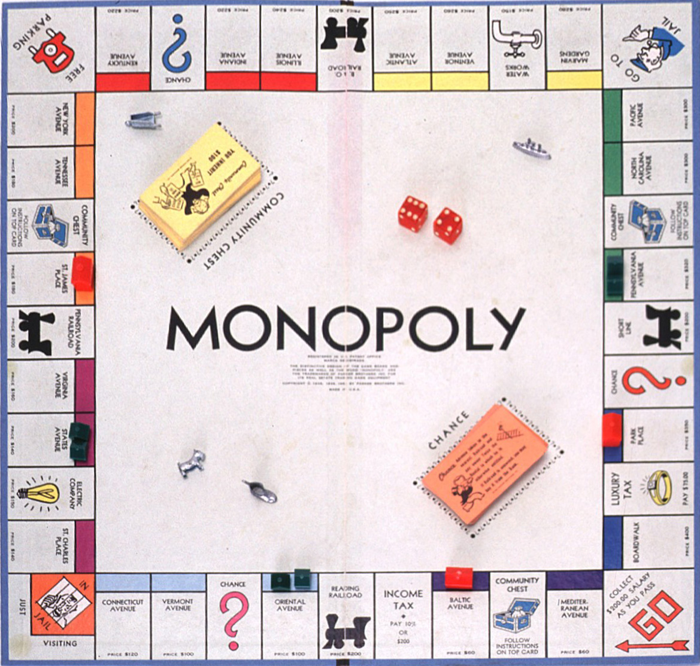

Ahora
Con los años la finalidad del juego cambió para sólo disfrutar de un buen rato, negociando propiedades y hasta hacaiendo uso de medios electrónicos para todas las transacciones que requiere el juego.

Un juego creado con la función de servir como herramienta para enseñarlas teorías acerca de la justicia social y económica extraídas del estudio titulado Progreso y Miseria de Henry George
Comercializado por vez primera en el año 1936.
A lo largo de 80 años, el juego ha sufrido una notable evolución. Sus múltiples ediciones y sus tantas versiones han dado pie a que se cambiara desde la aja que lo contiene hasta loselementos que lo componen. Logrando así, mantenerse como el favorito a través de las décadas.
Con los años la finalidad del juego cambió para sólo disfrutar de un buen rato, negociando propiedades y hasta hacaiendo uso de medios electrónicos para todas las transacciones que requiere el juego.
Con información de Monopoly Oficial